Pensamento Computacional
Introdução
- Escrever → definir instruções para se chegar à resolução de problemas;
- Pensamento computacional → habilidade generalista;
- Decomposição → dividir um problema complexo em subproblemas.
- Reconhecimento de padrões → identificar padrões ou tendências.
- Similaridades e diferenças entre os problemas.
- Abstração → extrapolar o conceito do problema para uma forma generalista.
- Design de algoritmo → automatizar; definir passo a passo a solução do problema.
- Definir uma solução
- Testar a solução
- Aperfeiçoamento da solução encontrada
- 1 - Abstração: resolução de problemas
- 2 - Automatização: expressão de solução
- 3 - Análise: execução da solução e avaliação (refinamento)
- Pensamento sistemático
- Colaboração dentro da equipe
- Criatividade e design
- Facilitador
Habilidades Complementares
- Raciocínio Lógico → é uma forma de pensamento estruturado, ou raciocínio, que permite encontrar a conclusão ou determinar a resolução de um problema. É uma habilidade de treinamento.
- Indução: fenômeno observado → leis e teorias
- Dedução: leis e teorias → previsões e explicações
- Abdução: conclusão → premissa
- processo investigativo; diagnóstico
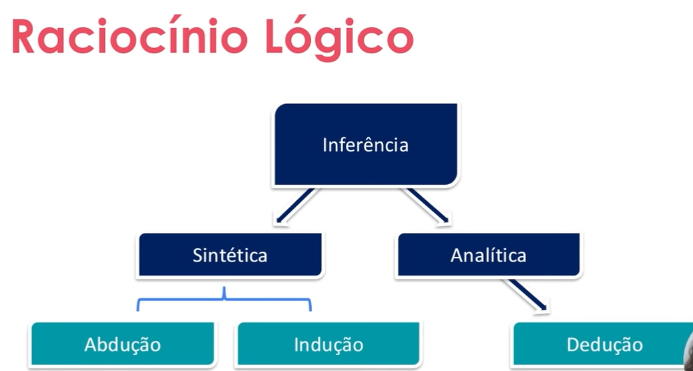
- Aperfeiçoamento: a partir de uma solução, determinar pontos de melhora e refinamento.
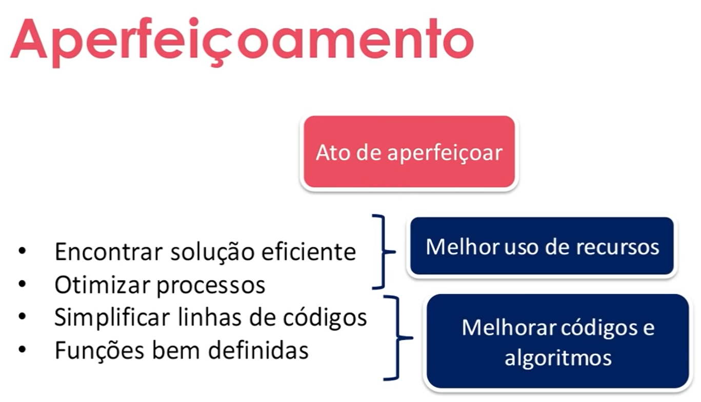
Decomposição
- Primeiro passo da resolução de problemas com o pensamento computacional
- Dado um problema complexo, devemos quebrá-lo em problemas menores. Portanto, problemas mais fáceis e gerenciáveis.
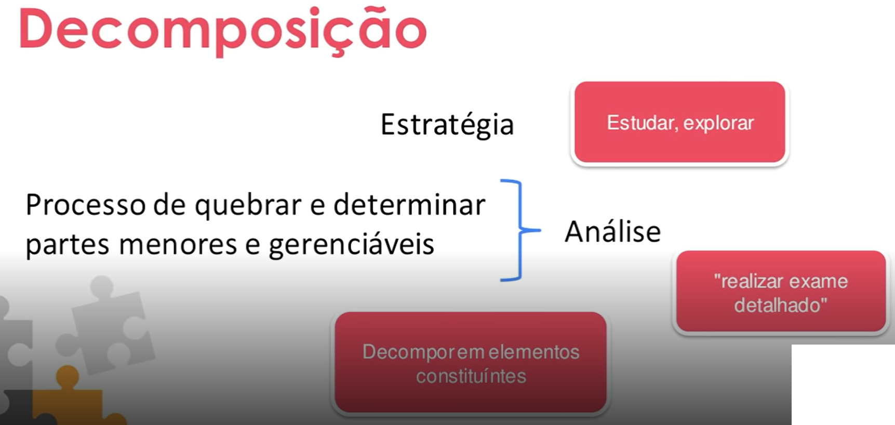
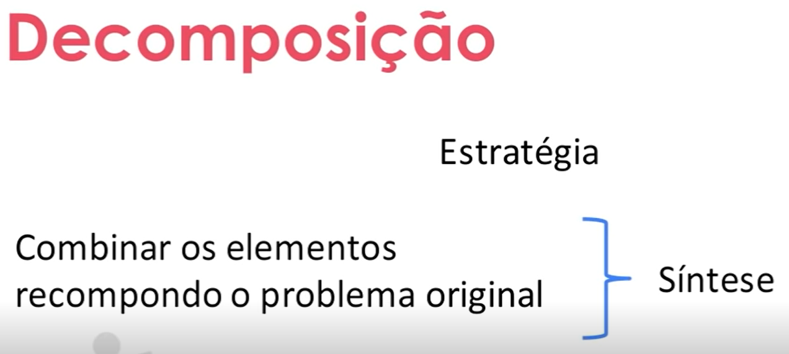
- Ordem de execução das tarefas → sequencial ou paralelo.
- Habilidade que se treina.
- Maneiras distintas de decompor o mesmo problema.
Padrões
- Reconhecimento de padrões
- Modelo base
- Estrutura invariante
- Repetição
- Similaridades e diferenças
- Por que determinar padrões?
- Generalizar, com objetivo de obter resolução para problemas diferentes.
- Classes e categorias
- Como o ser humano identifica padrões: grau de similaridade - grupos conhecidos x objeto desconhecido.
- Como o computador identifica padrões: comparação - representação de atributos; aprendizado - conceito associado ao objeto; armazenamento de dados; regras de decisão.
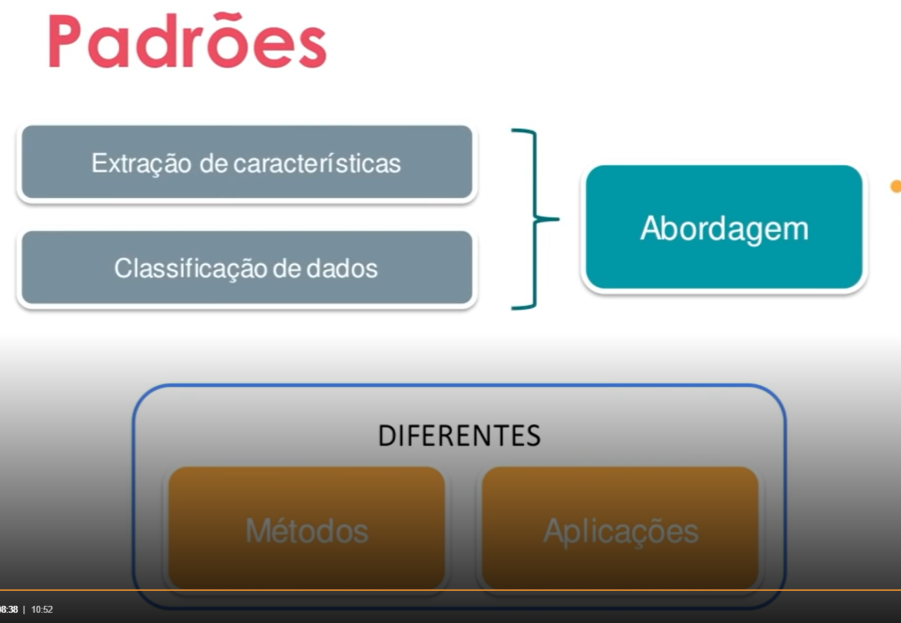
Abstração
- Abstrair: observar um ou mais elementos avaliando características e propriedades em separado;
- Abstração: processo intelectual de isolamento de um objeto da realidade
- Generalizar: tornar-se geral, mais amplo, extensão.
- Operação intelectual que consiste em reunir numa classe geral, um conjunto de seres ou fenômenos similares.
- Características
- Pontos essenciais
- Generalizar x detalhar
Algoritmo
- Instruções detalhadas
- Processo de resolução de problemas “step by step” utilizando instruções.
- O que precisa ser feito?
- Qual a ordem de execução?
- Precisa ser entendido por humano e por máquina.
- Análise
- Estudo e definição dos dados de entrada e saída
- Descreve o problema por meio de ferramentas:
- Narrativas → utilização de linguagem natural - pode ser ambígua
- Fluxograma → Utilização de símbolos pré-definidos - requer conhecimento prévio dos símbolos utilizados.
- Pseudocódigo → Portugol - regras definidas; passos a serem seguidos.
- O algoritmo é codificado de acordo com a linguagem de programação escolhida.
- Sequência de passos com objetivo definido;
- Execução de tarefas específicas
- Conjunto de operações que resultam em uma sucessão finita de ações
- Como construir um algoritmo?
- Compreensão do problema
- Definição dados de entrada
- Definir processamento
- Definir dados de saída
- Utilizar um método de construção
- Teste e diagnóstico
Introdução à lógica de programação
O que é lógica?
- Vem para solucionar algum problema.
- Problema: é uma questão que foge a uma determinada regra, ou melhor, é um desvio de percurso, o qual impede de atingir um objetivo com eficiência e eficácia.
- Lógica: parte da filosofia que trata das formas de pensamento em geral (dedução, indução, hipótese, inferência, etc.) e das operações intelectuais que visam à determinação do que é verdadeiro ou não.
- Lógica de programação: organização e planejamento das instruções assertivas em um algoritmo, a fim de viabilizar a implantação de um programa.
- Seres humanos podem prever comportamentos, o computador não!
Técnicas de lógica de programação
- Modelo tradicional
- Não tem vínculo
- Estrutura hierárquica
- Programação de computadores
- Modelo de desenvolvimento e resolução
- Execução sequenciada; recursos limitados; única dimensão.
- Organização, disposição e ordem dos elementos essenciais que compõem um corpo (concreto ou abstrato.
- Objetivo:
- Escrita - programas
- Entendimento
- Validação
- Manutenção - facilitar
- Modelo de desenvolvimento e resolução
- Partes independentes
- Controlada por um conjunto de regras
- Modelo de desenvolvimento e resolução
Dados de entrada → Processo de transformação → Dados de saída
- Simplificação
- Decompor o problema
- Verificação do módulo
Fundamentos de Algoritmos
Tipologia e Variáveis
- Caracteres → tudo que não é representado por número.
- Lógicos
- Booleano → Verdadeiro (1); Falso (0).
- Tipo de dado inconstante; instável.
- Pode assumir qualquer um dos valores de um determinado conjunto de valores, dependendo de seu tipo.
- Identifica um determinado dado e o tipo desse dado.
- Atribuição de um ou mais caracteres
- Primeira letra - não número
- Sem espaços em branco
- Vetado: utilização de palavras reservadas
- Caracteres e números
- Ação → modificação de estado do programa, da estrutura do programa
- Controle → Vigiada, controle de alguma estrutura ou equaç
- o.
- Constante → tudo aquilo que é fixo ou estável.
Instruções Primitivas
- Ações que iremos executar em cima dos dados.
- Cálculos matemáticos → operadores
- Os operadores podem ser unários ou binários
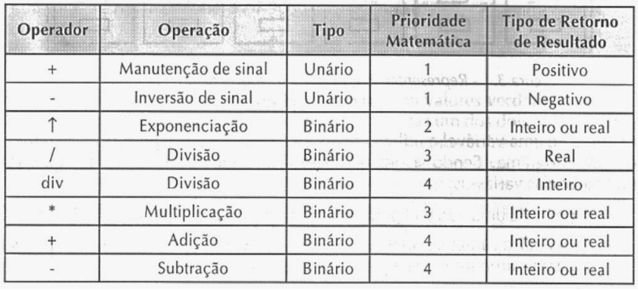
- Instruções são linguagem de palavra-chave (vocabulário) de uma determinada programação que tem por finalidade comandar um computador que irá tratar os dados.
- O mesmo comando possui sintaxe distinta em variadas linguagens de programação.
- Entrada, processamento e saída
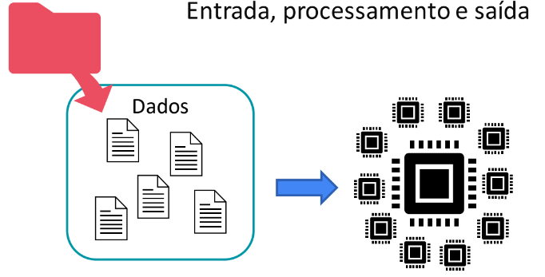
Estruturas Condicionais e Operadores
- Estrutura condicional → que expressa uma condição ou suposição; contém ou implica uma suposição ou hipótese.
- Qual a ideia?
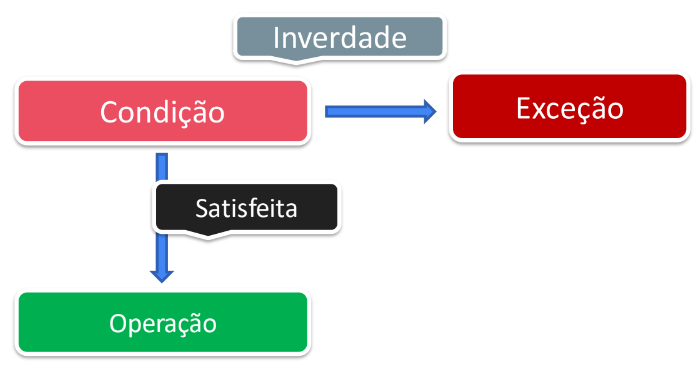
- Tipos de estruturas condicionais
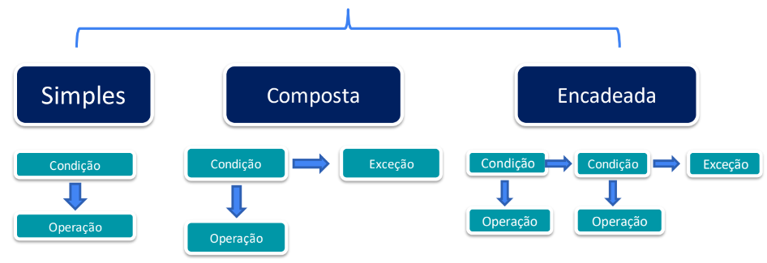
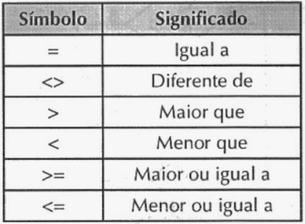
- Condicional Simples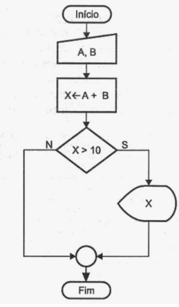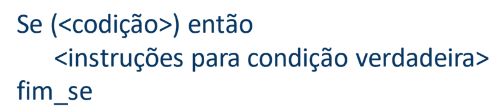
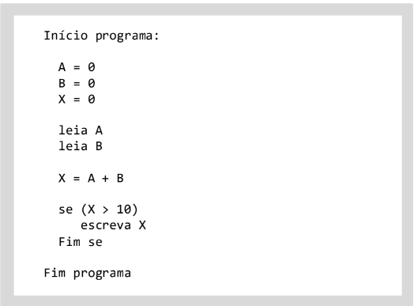
- Condicional composta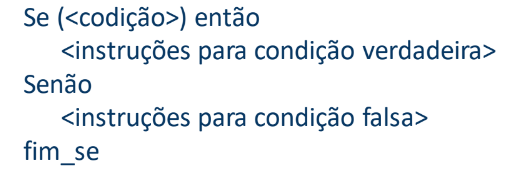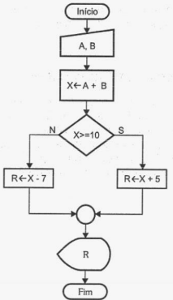
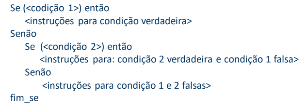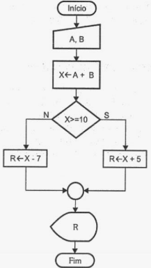
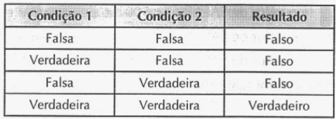
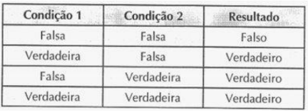
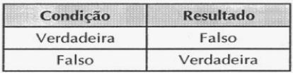
Estruturas de Repetição
- Laços, controle de fluxo, malhas de repetição, repetição, loop
- Deve ter uma condição de parada
- Número de repetições
- Condição a ser satisfeita
- Enquanto … Faça → teste lógico no início; número de repetições indefinidas.
- Repita … Até → teste lógico no final; número de repetições indefinidas.
- Para … de … Até … Faça → teste lógico no início; número de repetições definidas.
Vetores e Matrizes
- Um vetor é caracterizado por uma variável dimensionada com tamanho pré-fixado.
- Matriz unidimensional
- Container
- Matriz é uma tabela organizada em linhas e colunas no formato m x n, onde m representa o número de linhas (horizontal) e n o número de colunas (vertical).
- Container
- Coleção de variáveis vetores
- Contíguas em memória
- Índices
O que são funções?
- Subprogramas, subalgoritmo, função, bloco, método, sub-rotina.
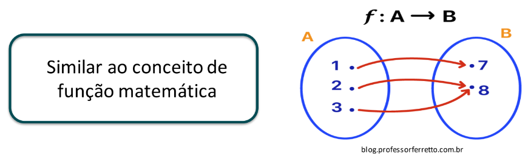
- As funções, ou sub-rotinas, são blocos de instruções que realizam tarefas específicas.
- Decomposição do algoritmo.
- Modularização do algoritmo
- Código mais claro e conciso
- Reutilização de instruções
- São blocos de instruções (código), identificados por nomes e parâmetros. São destruídas ao encerrar a função.
Instruções de Entrada/Saída
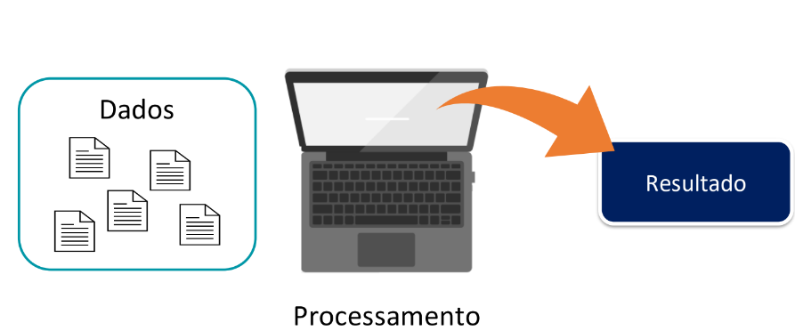
- Instruções de entrada: consiste na inserção e recebimento de dados do mundo real por meio de ação de alguma interface, seja teclado, mouse, arquivos, entre outros.
- Instruções de saída: consiste na impressão dos dados do mundo abstrato, digital por meio de ação de alguma interface. Os formatos podem variar desde simples arquivos binários até complexas querys de banco de dados.
- saída programada → condicional ou incondicional
- saída por interrupção → dada pelos periféricos
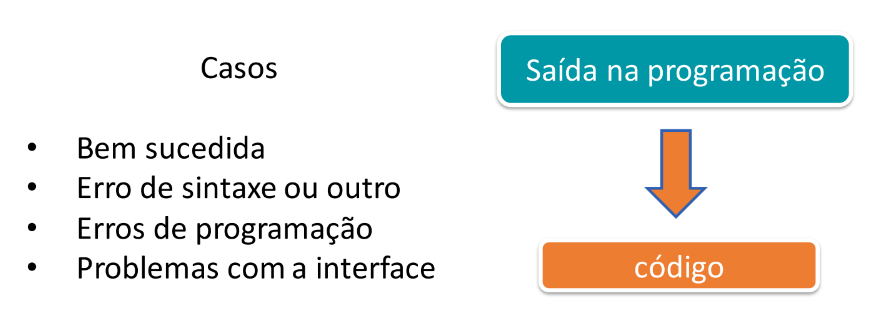
Linguagens de Programação
Introdução à Linguagens de Programação
- O que é uma linguagem de programação? É um método padronizado composto por um conjunto de regras sintáticas e semânticas de implementação de um código fonte.
- Conjunto de palavras e regras - código fonte → pode ser traduzido ou interpretado.
Como um Computador Entende o Programa?
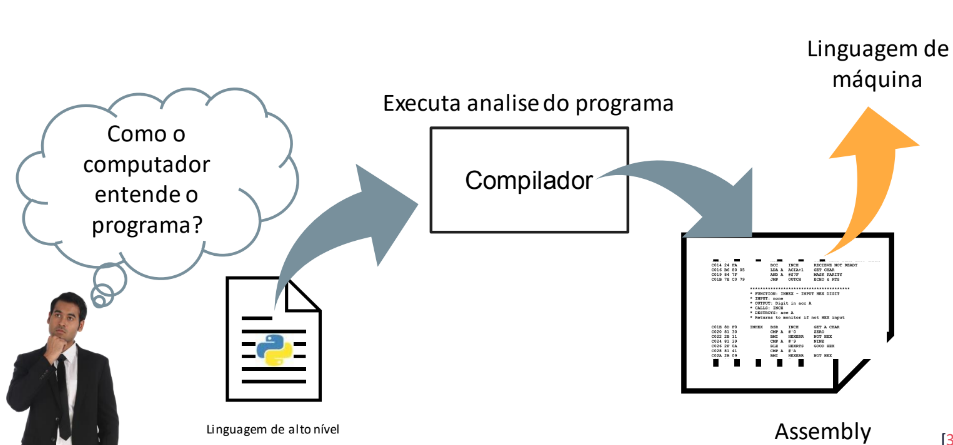
- Geração do programa objeto
- Execução do programa objeto
- Programa fonte executado diretamente
Características de um Programa
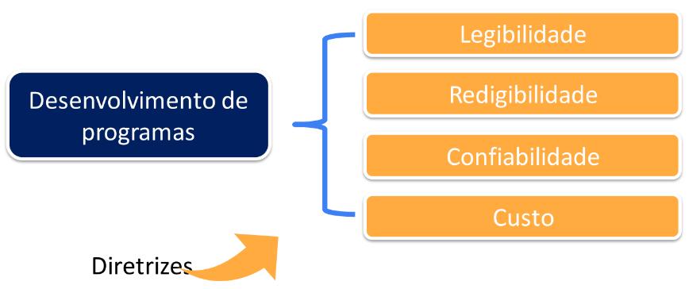
OBS: Ver slides a partir da página 404
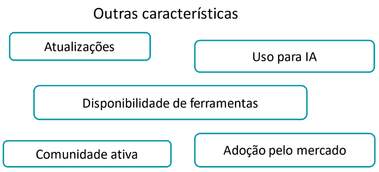
Análises de Código
- Análise léxica → primeira fase da compilação.
PARTICIONAR → CLASSIFICAR → ELIMINAR
- Elementos: identificadores, palavras reservadas, números, strings.
- Tokens
- Elimina: caracteres em branco, comentários, etc.
- Análise Sintática → componente do sistema linguístico que interligam os constituintes da sentença, atribuindo-lhe uma estrutura.
- Corretude do programa
- Depende da linguagem de programação
- Análise Semântica → estudo do significado. Incide sobre a relação entre significantes, como: palavras, frases, sinais e símbolos.
Paradigmas de Programação
- A forma de resolução de problemas com diretrizes e limitações específicas de cada paradigma utilizando linguagem de programação.
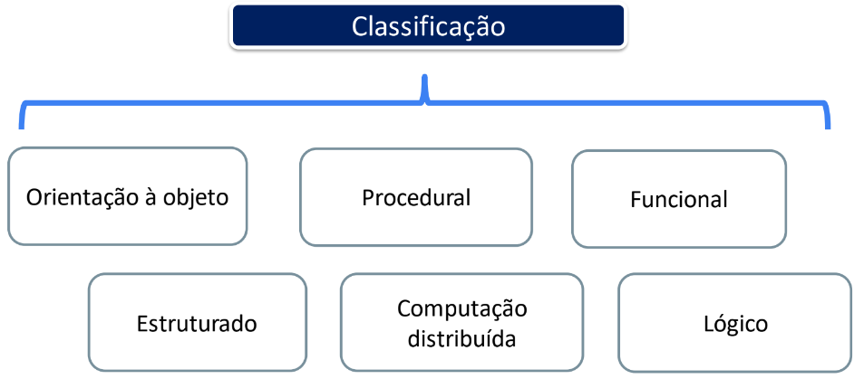
- Sequência
- Decisão
- Iteração
- Utilização
- Problemas simples e diretos
- Aprender a programar.
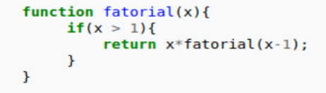
- Paradigma de programação baseado na utilização de objetos e suas interações.
- Análogo ao mundo real
- Objeto → é descrito por características específicas, comportamentos e estado.
- O que eu tenho → atributo
- Sou capaz de fazer → comportamento
- Como faço → estado
- Classificação: tipos do objeto
- A classe contém o objeto e as operações associadas.
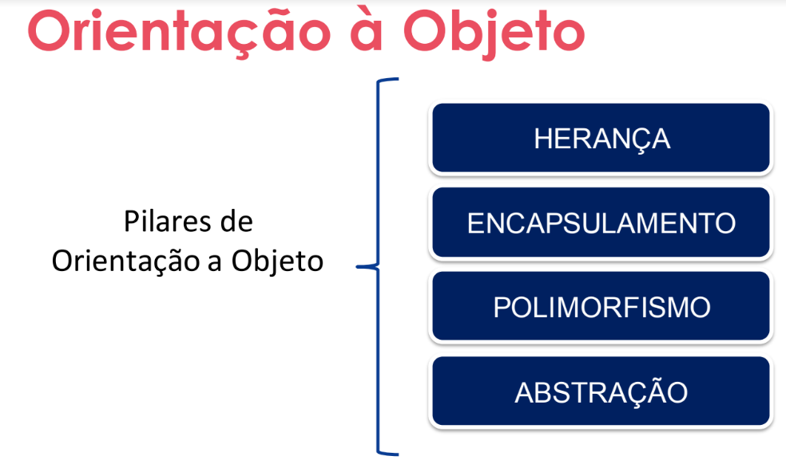
- Classe filha herda comportamentos da Classe mãe.
- Reuso de código
Primeiro Contato com a Programação
Algoritmos em Portugol
Considerações Finais